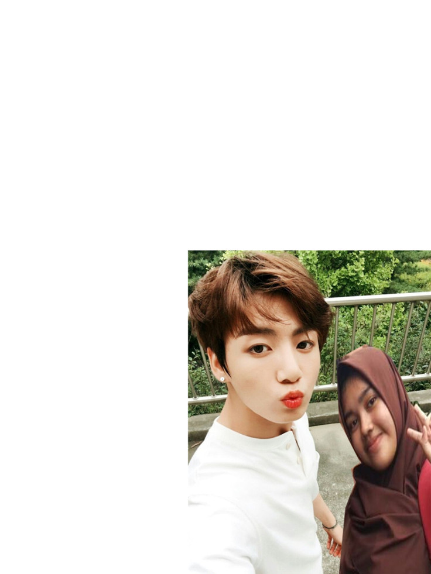

ABOUT ME
Tentang Saya
Blog ini berisi tentang biografi diri saya.Mulai dari biodata saya hingga hobi saya.Sebelum itu saya akan memperkenalakan diri terlebih dahulu,panggil saja saya lisna.
Welcome to my website. Nama saya Liesnawaty biasa dipanggil lisna.Saya anak terakhir dari 5 bersaudara.Saya lahir di Bogor 26 Juni 2001.
MY SCHOOL
(1)SDN Katulampa 5 Bogor
(2)SMPN 18 Bogor
(3)SMK-SMAK Bogor
Warna yang paling saya suka adalah PINK.
Saya suka dengan boyband asal korea BTS(Bangtan Boys) dan orang yang ngefans dengan BTS biasa disebut ARMY.
Wanna know more about me?Stay on my blog.
WHAT ARE MY HOBBIES
I'd love it

FANGIRLING
Fangirling itu sanagt seru karena kita bisa melihat indahnya dunia ini dari tampang member yang tampan.Walaupun kami tahu bahwa memiliki mereka itu sanagt sulit dan tidak mungkin terjadi di hidup saya.Saya sangat menyukai Jeon Jungkook yang merupakan salah satu member dari BTS. Alasannya adalah dia sangat tampan dan imut.

SLEEPING BEAUTY
Tidur adalah hal yang sangat baik bagi kesehatan,maka dari itu saya menjadikan tidur sebagai hobi saya yang kedua,sebenarnya jam tidur yang normal setiap hari adalah 6-7 jam.